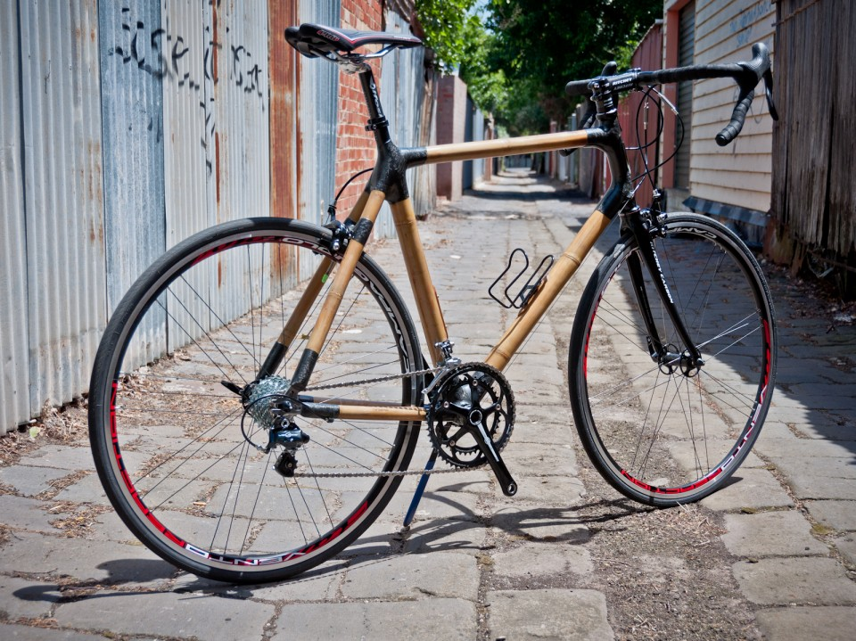

•°Alterbik3s°•
• NUEVA BIKEBOOH •
BiKebooh es la bicicleta adecuada para ir diariamente al trabajo o salir de compras. Sus características la hacen fiable, robusta y a la vez cómoda. Con ella podrás disfrutar de la ciudad en un día de sol, disfrutar de un domingo relajado o simplemente dar un refrescante paseo. Cuenta con una relación de 7 velocidades que te permitirá moverte sin esfuerzo, ya sea en llano o en pendiente. El modelo viene equipado con horquilla de carbono/bambú, lo que le da un andar singular e inconfundible. No pasarás inadvertido cuando recorras las calles de tu ciudad montado en tu BiKebooh.